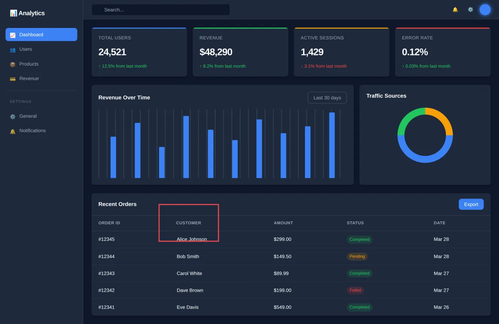
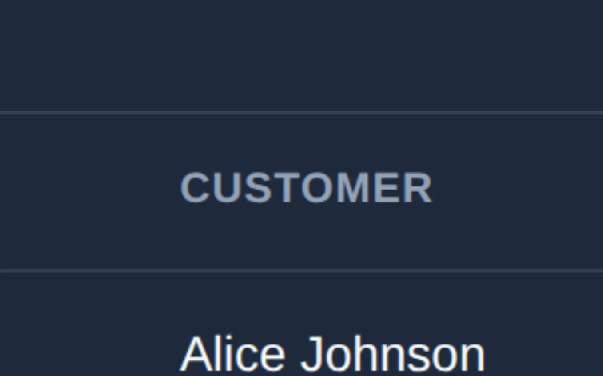
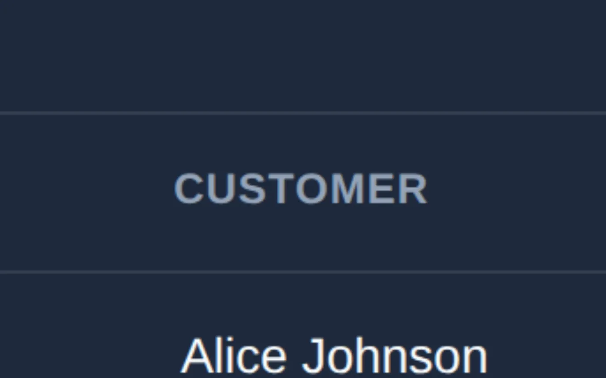

@mizchi/vlmkit-ai/zoom.ts
Letting a vision model zoom into the original
A full-page 2x capture of a dashboard is shown to a model at a little under its CSS size, and one table header moved 2px. The zoom tool lets the model name a box and get it back cropped from the full-resolution original and magnified, from any provider's model.
Open the fixture · fixtures/css-challenge/dashboard.html
Run it
import { prepareZoomSource, zoomInto } from "@mizchi/vlmkit-ai/zoom.ts";
// or the whole loop, with any provider's model:
// analyzeWithZoom(model, [{ png: baseline, label: "Baseline" }, { png: current, label: "Current" }], "What changed?", { maxZooms: 4 })




What to look at
In the view the model is sent, the shift is under two pixels. In the zoom it is plain: CUSTOMER starts level with "Alice Johnson" in the baseline and left of it in the current image. In the agent-mode accuracy bench, zoom scored 58/58 against 48/58 for one look, and the whole gain was exact values like this one.
The fix
Turn zoom on when the answer is a measurement (a shift in pixels, a colour value), not just to notice a change.
What the code returned
planted: table>thead>tr>th moved dx=-2, dy=0 CSS px (the known answer; seed 1) page: 1440x939 CSS px at 2x → original 2880x1878 view sent to the model (DEFAULT_IMAGE_BUDGET 1568px / 1.15MP): 1327x865 pixel diff bounds: (508,641.5)-(582,650.5) CSS px zoom Image 0 → Zoomed into (423,546)-(581,644) of the image you see at 1327x865px: a 343x214px region of the original, returned magnified to 1357x847px. zoom Image 1 → Zoomed into (423,546)-(581,644) of the image you see at 1327x865px: a 343x214px region of the original, returned magnified to 1357x847px. original box: (918,1185)-(1261,1399)